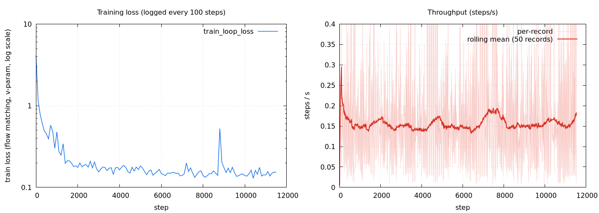

Waymo
*Project lead and major contributor.
We study whether a video diffusion transformer can learn to synthesize realistic driving video from colorized LiDAR alone. For every clip, aggregated LiDAR sweeps are colorized from the cameras at data-generation time and re-projected into the target camera for each of 41 frames; this sparse, geometry-exact but hole-ridden render is fed to a 10-layer DiT (3.75 B parameters, Wan 2.1 block geometry) through a 3D-convolutional dense encoder whose features are added at the first transformer block. The model is trained from random initialization with a flow-matching objective in the latent space of a frozen video autoencoder; the LiDAR render is rasterized on the fly in the data loader.
On 3,902 training clips the model reaches a stable training loss within ~4k steps and, by 8k–11k steps, its denoising predictions reproduce scene layout, signage, vehicles and lighting across highway, urban, dusk and night scenes — including scenes where the LiDAR render is almost black. We report the full training setup, loss and throughput curves, a step-by-step visual progression, and an honest account of what the current evidence does and does not show: no samples from noise have been generated yet, the training set has been seen ~190 times, and the CPU-side LiDAR decode, not the TPU, bounds throughput.
| Setting | Value |
|---|---|
| Backbone | Video DiT with the Wan 2.1 T2V-14B block geometry (hidden 5120, 40 heads × 128, FFN 13824, text dim 4096) but 10 layers instead of 40; scanned blocks with rematerialization. ≈3.75 B trainable parameters. |
| Initial weights | Random initialization, no pretrained checkpoint. None of the 40-layer 14B weights are loaded. The conditioning modules are also randomly initialized (not zero-initialized). Frozen / not trained: the video VAE (used only to decode previews; training is in latent space) and the T5 text encoder (a single precomputed generic "driving" embedding is used for every clip). |
| Target | 81-frame 256×512 RGB clip (≈4 s, front camera) encoded by the video VAE to a 21×32×64×16 latent (precomputed offline). |
| Conditioning | 41 colorized-LiDAR frames at 256×512×3 pixels (first 41 of 97 sweeps per clip, no frame interpolation), rendered on the fly in the data loader → in-model Conv3D dense encoder (temporal patch 2) → added to the token stream at DiT layer 1. Target camera poses are passed through. No conditioning latents, no raymaps. |
| Conditioning dropout | LiDAR conditioning dropped with p = 0.1 (independent); text never dropped. |
| Objective | Flow matching, v-parametrization, t ~ U[1e-5, 1]. |
| Optimizer | LaProp (β₁ 0.9, β₂ 0.999, ε 1e-8), global-norm clip 1.0, linear warm-up over 1,000 steps to peak LR 1e-4, parameter EMA 0.999 with 10k-step warm-up. |
| Data | 4,336 clips from January 2025 driving logs of a single vehicle platform; sequential split → 3,902 train / 434 held-out. Each record ≈139 MB (video latents + 97 compressed colorized point sweeps + poses) ≈ 600 GB total. |
| Compute | 32 TPU chips (8 hosts × 4), FSDP stage 3, global batch 64 (8 per host). 32 data-loader worker processes per host, each with 5 LiDAR-decode and 8 render threads. |
| Schedule | 100,000 steps planned; checkpoints every 100 steps, retained every 5,000. |
This run is a faithful re-launch of a colleague's earlier configuration from our own code tree; the two configurations differ only in file paths. The earlier run was terminated by a cluster duty-cycle policy at step 8,270; the run reported here has passed that point.

| Step | Loss | Note |
|---|---|---|
| 0 | 4.107 | random initialization |
| 100 | 1.162 | identical to the earlier run over the same window |
| 1,000 | 0.477 | end of LR warm-up |
| 4,000 | 0.164 | plateau starts |
| 8,200 | 0.139 | step at which the earlier run was terminated |
| 10,000 | 0.139 | |
| 11,500 | ≈0.15 | latest; window mean 0.148 over 10k–11k |
Data order after restarts. The data sampler is re-created with the same seed on every restart and its position is not checkpointed, so each restart replays the training set from the start of epoch 0. We detected this because the image grids at step 100 and step 8,200 (100 steps after a restart) contain the same clips — compare the first and fourth rows in the progression videos below. Early batches are therefore over-represented. This does not affect the pipeline-validation conclusions but will be fixed before any run whose numbers are meant to be compared.
How to read the prediction column. Every prediction shown on this page is a one-step denoising estimate: the ground-truth latent is noised to a random flow-matching time t and the model predicts the clean video in a single evaluation. At small t the task is trivially easy; at large t it is nearly unconditional. A sharp prediction is therefore necessary but not sufficient evidence that the model uses the LiDAR conditioning — and after ≈190 passes over 3,902 clips it is also compatible with memorization. Only sampling from pure noise on the held-out split (not yet run) answers that question.
Each clip: ground truth | colorized-LiDAR conditioning | prediction. 81 frames at 12 fps, looping. Click a video to pause/resume.
Dense LiDAR coverage on the vehicles and signal masts. The prediction recovers the car ahead including its roof sensor, the billboard and the far storefronts; the text on the billboard is not legible.
Embankment, overpass, light poles and the green sign are all present in the render and reproduced in the prediction; the trees on the right are blurrier than ground truth.
The LiDAR render is almost black apart from the lit sign and lane markings, yet the prediction places the sign, the street lights and the lanes correctly — colorization is camera-derived, so low light means weak conditioning.
Sparse conditioning; the prediction reproduces the lit sign and lane geometry with washed-out road texture.
Overhead structure, the signs at the exit and the lights are captured by the LiDAR render and reproduced.
Foggy night scene: the render shows the signal mast and curb; the prediction gets the glow and the red lights.
Very little LiDAR color; the prediction stays plausible but low-detail — the hardest regime for this conditioning.
The billboard, street lights and the vehicle ahead are placed correctly across the clip.
Tree trunks, parked cars and the building on the right are in the render; the prediction reproduces the layout and the red truck, with blurrier palm fronds.
The gantry and the yellow "exit only" panels are reproduced, including when they fill the top of the frame at the end of the clip.
Flat, low-contrast scene; layout is right, far-field texture is smeared.
Buildings, traffic lights, signs and the queue of cars are reproduced close to ground truth.
Columns, lane markings and vehicles ahead come through the render; the prediction's lighting is slightly washed out.
The render captures the gantry; the prediction reproduces the red/amber lights and the fog glow.
Tail lights and storefront lights are placed correctly; fine texture is lost.
Near-empty render; the prediction is plausible but generic.
Rows, top to bottom: step 100 · 1,000 · 4,000 · 8,200 · 11,100. Columns: ground truth · LiDAR conditioning · prediction. Each row is a different training batch, except rows 1 and 4, which show the same clip (see the data-order note above) and therefore give a direct before/after over 8,100 steps.
Part of the step-to-step difference is the random noise level drawn for each sample (see "How to read the prediction column").
| How many training steps? | 11,500+ completed of 100,000 planned; the run is still training. |
| What were the initial weights? | Random. No pretrained diffusion weights are loaded; the 10-layer DiT, the Conv3D LiDAR encoder and the injection projection all start from random initialization. The video VAE and the text encoder are frozen and only used offline / for previews. |
| How big is the model? | ≈3.75 B trainable parameters (10 blocks × ≈351 M, plus ≈0.23 B of embedders and output head), counted from the checkpoint array shapes. |
| How much training data? | 3,902 clips of 81 frames each (≈4 s, 256×512). ≈600 GB on disk including the compressed LiDAR sweeps. |
| How much held-out data? | 434 clips (sequential 10 % split), never read during training. No evaluation on them has been run yet. |
| How many epochs? | With batch 64 over 8 hosts and remainder dropping, one epoch is 60 steps, so 11,500 steps ≈ 190 epochs. Treat the loss plateau accordingly. |
| What compute was used? | 32 TPU chips (8 hosts × 4) with FSDP; ≈40 chip-days so far (≈1.3 days of the full 32-chip slice) at an average duty cycle of 0.26. |
| Why is throughput only ≈6.5 s/step? | Decoding the compressed point streams of five sensors and rasterizing 41 frames per clip costs ≈25 s of host CPU per sample; 32 worker processes per host hide most of it, but the accelerators still idle ≈75 % of the time. Pre-rendering the LiDAR frames offline removes this bottleneck entirely. |
| Are these generated videos? | No. They are one-step denoising predictions from noised ground truth at a random noise level. Sampling from pure noise on held-out clips is the next step. |
| Does the model actually use the LiDAR? | The predictions follow the render in cases where unconditional guessing would fail (exact sign positions, vehicles, gantries), which is encouraging, but a conclusive answer requires sampling from noise with and without the conditioning (classifier-free guidance sweep) on held-out clips. |
| Why from scratch rather than fine-tuning the 14B model? | This stage validates the data path and the conditioning mechanism end to end at low cost. A 10-layer scratch model trains and iterates quickly; fine-tuning the full 40-layer model is the natural next step once the data loader is no longer the bottleneck. |
Planned: (i) sampling from noise on the 434 held-out clips at the retained checkpoints with LiDAR guidance 1–3; (ii) held-out flow-matching loss at steps 0 / 5k / 10k; (iii) fix the restart data order; (iv) offline LiDAR rendering to lift throughput; (v) then scale to the full 40-layer pretrained backbone.
@misc{zhao2026colorizedlidar,
title = {Colorized-LiDAR Conditioned Video Diffusion for Driving Scenes},
author = {Zhao, Zelin and {Waymo World Modeling Team}},
year = {2026},
howpublished = {Project page},
note = {Zelin Zhao: project lead and major contributor}
}